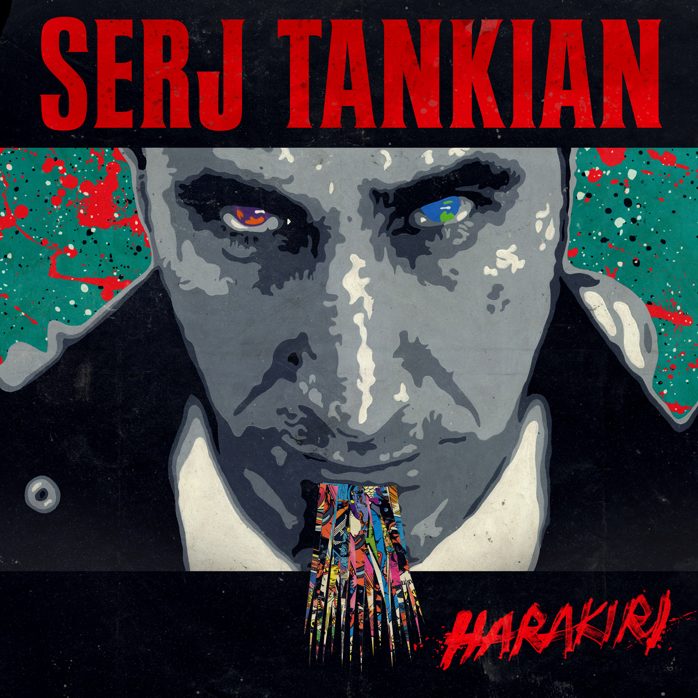

Home
Biography
Musicial Career
Links
Tankian is an outspoken activist, who is passionate about human rights, recognition of genocides, and social justice. Following the September 11th attacks, he wrote an essay where he says "If we carry out bombings on Afghanistan or elsewhere to appease public demand, and very likely kill innocent civilians along the way, we'd be creating many more martyrs going to their deaths in retaliation against the retaliation. As shown from yesterday's events, you cannot stop a person who's ready to die." War is one of his topics seeing how many innocent people are affected. such as the two genocides in each world war that affected an estimated 7.5million people. Many of these topics can be seen in his music such as “prison system” where the lyrics are as follows.
“…All research and successful drug policies show That treatment should be increased…”
Despite the song being one of the more strangely written songs, it is easy to get a sense of his stance on the issue. His lyrics can be strangely written, make little to no apparent sense, or reference important events. Harakiri the song from the album of the same title includes the following.
 “…We're the greying herds
Hurting each other with our lives
Within our dreams, we all wake up
To kiss the ones who are born to die
Born to die, born to die
The drum fish
They beached themselves in Hara-kiri
The blackbirds
They fell in thousands from the sky
Their red wings
Streaming down from the higher seas
Deflected by the grounds…”
In the first stanza, he talks about all of us as the greying herds and how we hurt each other by living. I believe he is referring to our impact on the planet such as emissions, how we have endangered animals, and so on. That is my interpretation but the second part isn’t as subjective, it refers to an incident where red-winged black birds began dropping from the sky. 5,000 birds laid dead and necropsies show they died on blunt force trauma and not something such as poisoning. Tankian co-created a non-profit organization called Axis of Justice to help try and change the world he lyrically commented on often.
Serj has organized many protests from Armenian Genocide recognition to Axis of Justice protests. He also has taken on supporting animal rights after being disgusted with the industrial slaughter houses and has signed a PETA petition against the methods used in KFC slaughter houses.